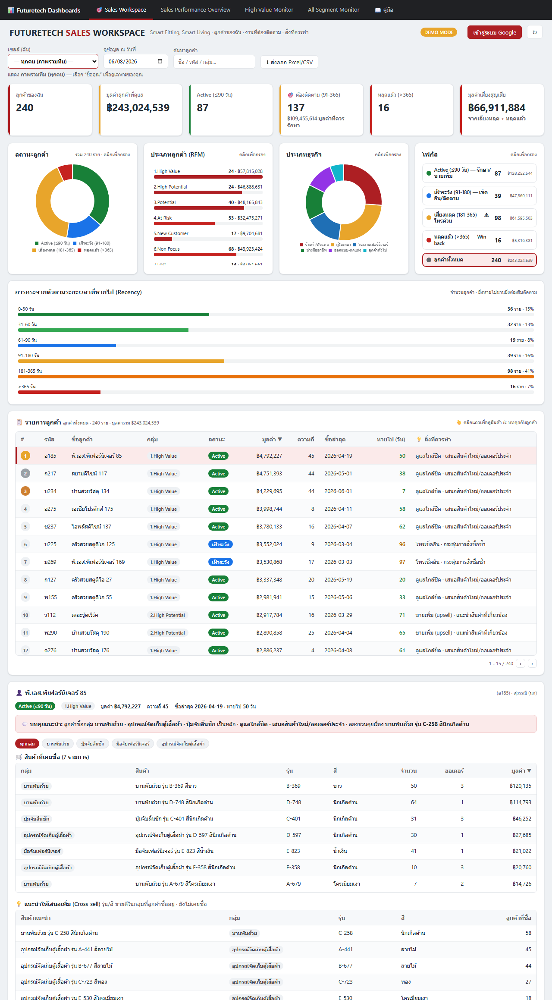
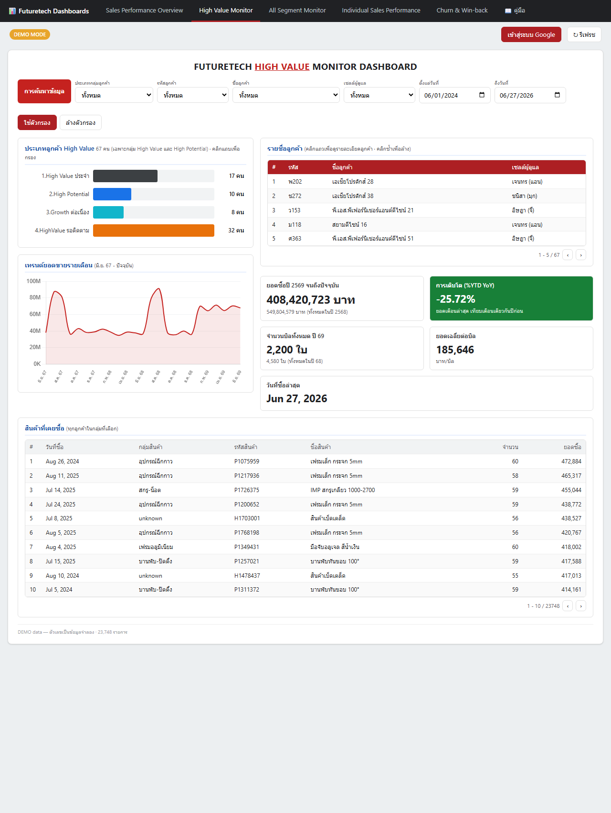
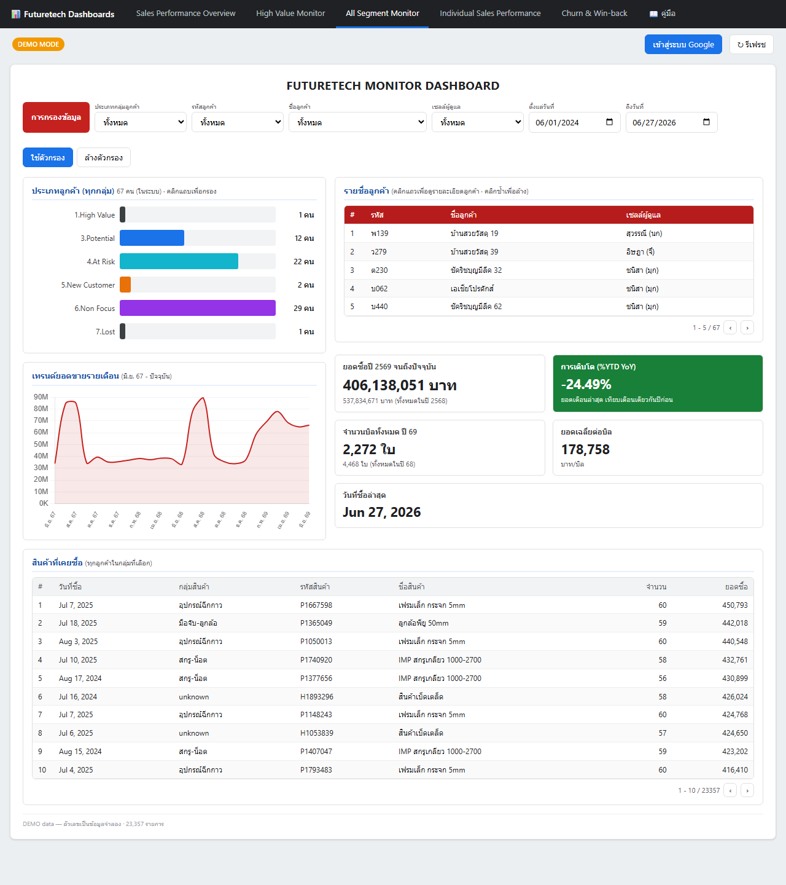

i Dashboard ชุดนี้คืออะไร
ชุด dashboard สำหรับธุรกิจ Futuretech (อุปกรณ์เฟอร์นิเจอร์ — บานพับ ราง มือจับ ฯลฯ)
ดึงข้อมูลยอดขายจริงจาก Google BigQuery มาแสดงผลแบบ Looker Studio
ครอบคลุมตั้งแต่ภาพรวมการขาย พยากรณ์ สินค้า ตะกร้าสินค้า ไปจนถึงพฤติกรรมลูกค้า และเครื่องมือรายวันสำหรับทีมขาย (Sales Workspace)
ทุกหน้าใช้ แถบเมนูด้านบน ร่วมกัน คลิกสลับได้ทันที
ไม่ต้องล็อกอินก็ลองได้ — ทุกหน้าเปิดมาในโหมด DEMO
ที่ใช้ข้อมูลจำลอง ให้เห็นหน้าตาและวิธีอ่านก่อน เมื่อพร้อมค่อยกด “เข้าสู่ระบบ Google” เพื่อดูข้อมูลจริง
สารบัญ
1 เริ่มต้นใช้งาน 3 ขั้นตอน
- เปิดหน้าใดก็ได้ — จะเริ่มที่โหมด DEMO MODE โดยอัตโนมัติ
ลองเล่นตัวกรองและคลิกกราฟได้เลย ข้อมูลทั้งหมดเป็นของจำลอง
- กด “เข้าสู่ระบบ Google” (มุมขวาบน) แล้วเลือกบัญชี Google ที่มีสิทธิ์เข้าถึง BigQuery
ของโปรเจกต์ — ระบบจะอ่านโครงสร้างตาราง (schema) ให้เองและสลับเป็น LIVE · BigQuery
- กรองและอ่านผล — เลือกช่วงวันที่ / กลุ่มสินค้า / ประเภทลูกค้า แล้วกด “ใช้ตัวกรอง”
ตัวเลขและกราฟทุกอันจะอัปเดตพร้อมกัน
ปุ่ม ↻ ข้างปุ่มล็อกอิน = โหลดข้อมูลใหม่ (LIVE) หรือสุ่มข้อมูลจำลองชุดใหม่ (DEMO)
2 โหมด DEMO vs LIVE & การเชื่อมต่อ BigQuery
| หัวข้อ | DEMO MODE | LIVE · BigQuery |
|---|
| ข้อมูล | จำลองขึ้นในเบราว์เซอร์ (สุ่มใหม่ได้) | ข้อมูลจริงจากตาราง sale_transaction |
| ต้องล็อกอิน? | ไม่ต้อง | ต้องเข้าสู่ระบบ Google ที่มีสิทธิ์ BigQuery |
| ใช้ทำอะไร | เรียนรู้หน้าตา / สอนงาน / นำเสนอแนวคิด | วิเคราะห์และตัดสินใจจริง |
การตั้งค่าการเชื่อมต่อ (กดที่ ⚙ ด้านบนของหน้า)
| Project ID | โปรเจกต์ Google Cloud ที่ใช้คิดค่า query — ค่าเริ่มต้น futuretech-468203 |
| Dataset | ชุดข้อมูลใน BigQuery — sales_data |
| Table | ตารางธุรกรรม — sale_transaction |
| OAuth Client ID | รหัสสำหรับล็อกอินผ่าน Google Identity Services (เว็บอ่าน BigQuery โดยตรง) |
ความปลอดภัย: ระบบล็อกอินด้วยบัญชี Google ของผู้ใช้เอง
ไม่มีการเก็บรหัสผ่านหรือ secret ใด ๆ ไว้ในไฟล์ และเชื่อมต่อ BigQuery แบบ อ่านอย่างเดียว (read-only)
3 แถบตัวกรองร่วม (Filters)
ตัวกรองด้านบนมีผลกับทั้งหน้า เลือกแล้วกด “ใช้ตัวกรอง” หรือกด “ล้างตัวกรอง” เพื่อรีเซ็ต
| ตัวกรอง | ความหมาย |
|---|
| ตั้งแต่ / ถึงวันที่ | จำกัดช่วงเวลาของข้อมูลที่นำมาคำนวณทุกการ์ด |
| กลุ่มสินค้า | โฟกัสเฉพาะหมวดสินค้าที่เลือก (เช่น รางลิ้นชัก, บานพับถ้วย) |
| ประเภทลูกค้า | กรองตามชนิดลูกค้า (โรงงาน, ผู้รับเหมา, ร้านค้า ฯลฯ) |
| พยากรณ์ | เลือกจำนวนเดือนข้างหน้าที่จะพยากรณ์ (3 หรือ 6 เดือน) — เฉพาะ Sales Performance Overview |
เคล็ดลับ — คลิกกราฟเพื่อกรอง: ใน Sales Performance Overview คลิก “ชิ้น” ของกราฟโดนัท
(กลุ่มสินค้า/ประเภทลูกค้า) เพื่อกรองทั้งหน้าได้ทันที คลิกซ้ำที่ชิ้นเดิมเพื่อยกเลิก
ส่วนหน้า Monitor คลิกที่แถบ segment เพื่อเจาะดูเฉพาะกลุ่มนั้น
4 แนะนำ 4 หน้า Dashboard
แต่ละหน้าตอบโจทย์คนละมุม เลือกใช้ตามคำถามที่อยากได้คำตอบ
🎯 Sales Workspace
“ลูกค้าของฉันเป็นใคร และวันนี้ต้องตามใครก่อน?”
เครื่องมือรายวันของทีมขาย — เลือกเซลล์ของตัวเอง ดู KPI พอร์ตลูกค้า สถานะ/RFM/ประเภทธุรกิจ การกระจาย Recency รายชื่อลูกค้าที่ต้องติดตาม และบทคุยรายคน (สินค้าที่เคยซื้อ + แนะนำขายเพิ่ม)
📈 Sales Performance Overview
“ภาพรวมการขายเป็นอย่างไร และกำลังไปทางไหน?”
ภาพรวมยอดขาย แนวโน้ม พยากรณ์ สัดส่วนสินค้า/ลูกค้า โมเมนตัมกลุ่มสินค้า สินค้าขายดี ตะกร้าสินค้า และโอกาสขายเพิ่ม รวมในหน้าเดียว
💎 High Value Monitor
“ลูกค้ามูลค่าสูงเป็นใคร ซื้ออะไร และเทรนด์เป็นอย่างไร?”
เจาะกลุ่มลูกค้า High Value — ประเภทลูกค้า, เทรนด์ยอดขายรายเดือน, รายชื่อลูกค้า และสินค้าที่เคยซื้อ
🗂️ All Segment Monitor
“ลูกค้าทุกกลุ่มกระจายตัวอย่างไร?”
เหมือน High Value แต่ครอบคลุมลูกค้าทุก segment — เปรียบเทียบประเภทลูกค้า เทรนด์ และเจาะรายชื่อ/สินค้าที่เคยซื้อได้
↑ กลับขึ้นสารบัญ
5 เจาะลึก Sales Performance Overview
หน้านี้เรียงเป็น 5 ส่วนตามลำดับการเล่าเรื่อง — ไล่จากบนลงล่างจะได้ภาพครบตั้งแต่ “ภาพใหญ่” ไปจนถึง “สิ่งที่ต้องลงมือทำ”
KPI แถบตัวเลขสรุปด้านบน
- ยอดขายปี — ยอดรวมปีล่าสุด พร้อม YoY ของเดือนล่าสุด
- เดือนล่าสุด — ยอดเดือนล่าสุด พร้อม MoM (เทียบเดือนก่อนหน้า)
- เติบโต YTD — เทียบยอดสะสมตั้งแต่ต้นปีกับช่วงเดียวกันของปีก่อน
- พยากรณ์ — คาดการณ์ยอดรวมของเดือนข้างหน้า (ตามจำนวนเดือนที่เลือก)
- จำนวน Order เดือนล่าสุด — จำนวนออเดอร์ของเดือนล่าสุด ใต้ตัวเลขแสดง ค่าเฉลี่ย 3 เดือน พร้อมสี ▲ เขียว/▼ แดง บอกว่าเดือนล่าสุดสูง/ต่ำกว่าค่าเฉลี่ย
- AOV เดือนล่าสุด — ค่าใช้จ่ายเฉลี่ยต่อ Order ของเดือนล่าสุด (ยอดขาย ÷ จำนวน Order) ใต้ตัวเลขแสดง AOV เฉลี่ย 3 เดือน พร้อมสี ▲ เขียว/▼ แดง บอกว่าเดือนล่าสุดสูง/ต่ำกว่าค่าเฉลี่ย
① ทิศทางธุรกิจ
กราฟ ยอดขายรายเดือน · แนวโน้ม · พยากรณ์ (เส้นจริง + ค่าเฉลี่ยเคลื่อนที่ 3 เดือน + เส้นพยากรณ์),
เทียบรายเดือน ปีนี้ vs ปีก่อน และ ฤดูกาล (Seasonality)
กราฟเทียบรายเดือน แสดงแท่งยอดขายปีนี้/ปีก่อนคู่กัน (แท่งปีนี้เป็น สีส้ม เมื่อต่ำกว่าปีก่อน)
พร้อมเส้น %YoY บนแกนขวา (จุด เขียว = โต, แดง = หด) ใช้ดูว่าแต่ละเดือนโต/หดกี่เปอร์เซ็นต์
หัวกราฟสรุป YTD · เดือนโตสุด · เดือนหดให้ และ hover เพื่อดูส่วนต่างเป็นบาท + %
กราฟฤดูกาล ซ้อนเทรนด์รายเดือน (ม.ค.–ธ.ค.) ของแต่ละปีเป็นเส้น พร้อมเส้นหนาประ = ค่าเฉลี่ยทุกปี
(จุด เขียว = พีค, แดง = ต่ำสุด) ใช้ดูว่า:
- Seasonal มีผลไหม — ถ้าทุกปีขึ้น-ลงพร้อมกันที่เดือนเดิม แสดงว่ามีรูปแบบตามฤดูกาลชัด
- ช่วงไหนสวิง — เดือนที่เส้นแต่ละปีถ่างห่างกันมาก = ยอดขายสวิงสูง (บรรทัดบนขวาสรุป พีค/ต่ำสุด/สวิงมากสุดให้)
② โครงสร้างยอดขาย
โดนัท สัดส่วนกลุ่มสินค้า และ สัดส่วนประเภทลูกค้า — คลิกที่ชิ้น เพื่อกรองทั้งหน้า
③ โมเมนตัมกลุ่มสินค้า
กราฟแท่ง การเติบโต (YoY) รายกลุ่มสินค้า และ เทรนด์ Top 5 รายเดือน — ดูว่ากลุ่มไหนกำลังโต กลุ่มไหนกำลังหด
④ สินค้า & ตะกร้าสินค้า
ตารางสินค้าขายดี (มีคอลัมน์ YoY บอกโมเมนตัมรายสินค้า — เรียง/ค้นหาได้)
และ ตะกร้าสินค้า (Market Basket) ที่บอกว่าลูกค้ามักซื้อสินค้าคู่ไหนด้วยกัน พร้อมค่า Support / Confidence / Lift
⑤ ลูกค้า & โอกาสขายเพิ่ม
ตารางลูกค้า (คลิกชื่อเพื่อดูสินค้าที่ลูกค้ารายนั้นเคยซื้อ) และ โอกาสขายเพิ่ม (Cross-sell) —
สินค้าขายดีที่ลูกค้ายังไม่เคยซื้อ ใช้เป็นรายการแนะนำให้ทีมขาย
↑ กลับขึ้นสารบัญ
6 วิธีใช้งานละเอียดรายหน้า (Step-by-step)
ขั้นตอนการคลิก-กรอง-เจาะข้อมูลของแต่ละหน้า — ทำตามหมายเลขได้เลย
🎯 Sales Workspace
ใช้ตอบ: เครื่องมือรายวันของเซลล์ — ลูกค้าของฉัน ใครต้องตามก่อน และจะคุยอะไร

1
2
3
4
5
6
7
8
9
10
- 1 ตัวกรองหลัก — เลือก “เซลล์ (ฉัน)” · ช่วง “ดูข้อมูล ณ วันที่” · ค้นหาลูกค้า · ปุ่ม ส่งออก Excel/CSV
- 2 KPI — ลูกค้าของฉัน · มูลค่าที่ดูแล · Active · ต้องติดตาม (91–365) · หลุดแล้ว · มูลค่าเสี่ยงสูญเสีย
- 3 “สถานะลูกค้า” (โดนัท Active/เฝ้าระวัง/เสี่ยง/หลุด) — คลิกชิ้นเพื่อกรองทั้งหน้า
- 4 “ประเภทลูกค้า (RFM)” — แท่งเรียงตามกลุ่ม 1–7 · คลิกเพื่อกรอง
- 5 “ประเภทธุรกิจ” — โรงงาน/ผู้รับเหมา/ร้านค้า ฯลฯ · คลิกเพื่อกรอง
- 6 “โฟกัส” — 4 สถานะที่บวกกันได้พอดีกับยอดรวม ใช้เลือกงานที่จะลุย (คลิกเพื่อกรอง)
- 7 “การกระจายตัว Recency” — จำนวนลูกค้าตามวันที่หายไป (ปรับตามตัวกรองที่เลือก)
- 8 ตารางรายการลูกค้า — เรียง/ค้นหาได้ แล้ว คลิกแถวลูกค้า เพื่อเปิดบทคุยด้านล่าง
- 9 “สินค้าที่เคยซื้อ” ของลูกค้าที่เลือก — เรียงตามจำนวน/ออเดอร์/มูลค่าได้
- 10 แนะนำให้เสนอเพิ่ม (Cross-sell) — รุ่น/สีขายดีในกลุ่มที่ลูกค้าซื้ออยู่แต่ยังไม่เคยซื้อ ใช้เป็นบทเปิดการขายได้ทันที
📈 Sales Performance Overview
ใช้ตอบ: ภาพรวมการขายทั้งหมดในหน้าเดียว (รายละเอียดการ์ดดูหัวข้อ 5)
- 1 ตัวกรองทั้งหน้า — วันที่ · กลุ่มสินค้า · ประเภทลูกค้า · จำนวนเดือนพยากรณ์
- 2 KPI — ยอดขายปี · เดือนล่าสุด · YTD · พยากรณ์ · Order เดือนล่าสุด · AOV (มีค่าเฉลี่ย 3 เดือน + สีขึ้น/ลง)
- 3 กราฟ “เทียบรายเดือน ปีนี้ vs ปีก่อน” + เส้น %YoY บนแกนขวา (เขียว=โต แดง=หด)
- 4 โดนัทกลุ่มสินค้า/ประเภทลูกค้า — คลิกชิ้นเพื่อกรองทั้งหน้า (คลิกซ้ำเพื่อยกเลิก)
▾ เลื่อนลงในหน้าจริงจะพบ ตารางสินค้าขายดี · ตะกร้าสินค้า · ตารางลูกค้า · Cross-sell (ตามขั้นตอนด้านล่าง / รายละเอียดหัวข้อ 5)
- ตั้งตัวกรองด้านบน — ช่วงวันที่ / กลุ่มสินค้า / ประเภทลูกค้า / จำนวนเดือนพยากรณ์ แล้วกด “ใช้ตัวกรอง” (กด “ล้างตัวกรอง” เพื่อรีเซ็ต)
- คลิกชิ้นกราฟโดนัท (สัดส่วนกลุ่มสินค้า หรือ ประเภทลูกค้า) เพื่อกรองทั้งหน้าตามชิ้นนั้น — คลิกซ้ำที่ชิ้นเดิมเพื่อยกเลิก
- ตารางสินค้าขายดี — คลิกหัวคอลัมน์เพื่อเรียงลำดับ หรือพิมพ์ในช่อง “ค้นหาสินค้า…” เพื่อกรอง (มีคอลัมน์ YoY บอกโมเมนตัม)
- คลิกชื่อลูกค้า ในตาราง “ลูกค้า” → ด้านขวาจะแสดงสินค้าที่ลูกค้ารายนั้นเคยซื้อ และโอกาสขายเพิ่ม (Cross-sell) เฉพาะรายนั้น
💎 High Value Monitor
ใช้ตอบ: เจาะลูกค้ามูลค่าสูงเป็นรายคน — ซื้ออะไร โตแค่ไหน หายไปนานหรือยัง

1
2
3
3.1
4
5
- 1 ใช้ตัวกรอง/ค้นหา — ประเภทกลุ่ม · รหัส/ชื่อลูกค้า · เซลล์ผู้ดูแล · ช่วงวันที่ (พิมพ์ในช่อง “ค้นหา…” ได้)
- 2 คลิกแถบกลุ่มลูกค้า เพื่อกรองเฉพาะกลุ่มนั้น (คลิกซ้ำเพื่อล้าง)
- 3 คลิกชื่อลูกค้าในตาราง เพื่อดูรายละเอียดรายคน
- 3.1 ปุ่ม ‹ › เลื่อนหน้ารายชื่อลูกค้า
- 4 สกอร์การ์ดของลูกค้าที่เลือก — ยอดซื้อ · %YTD YoY · จำนวนบิล · ยอดเฉลี่ย/บิล · วันที่ซื้อล่าสุด + เทรนด์รายเดือน
- 5 ตาราง “สินค้าที่เคยซื้อ” ของลูกค้าที่เลือก
🗂️ All Segment Monitor
ใช้ตอบ: ภาพลูกค้าทุก segment (ใช้งานเหมือน High Value แต่ครอบคลุมทุกกลุ่ม)

1
2
3
3.1
4
5
- 1 ใช้ตัวกรอง/ค้นหา — ประเภทกลุ่ม · รหัส/ชื่อลูกค้า · เซลล์ · ช่วงวันที่
- 2 คลิกแถบกลุ่มลูกค้า (ทุก segment) เพื่อกรอง (คลิกซ้ำเพื่อล้าง)
- 3 คลิกชื่อลูกค้าในตาราง เพื่อดูรายละเอียดรายคน
- 3.1 ปุ่ม ‹ › เลื่อนหน้ารายชื่อ
- 4 สกอร์การ์ดของลูกค้าที่เลือก + เทรนด์รายเดือน
- 5 ตาราง “สินค้าที่เคยซื้อ” ของลูกค้าที่เลือก
↑ กลับขึ้นสารบัญ
7 คำศัพท์ & สูตรคำนวณ
| คำศัพท์ | ความหมาย |
|---|
| YoY | Year over Year — เทียบกับช่วงเดียวกันของ ปีก่อน ▲ โต ▼ หด |
| MoM | Month over Month — เทียบกับ เดือนก่อนหน้า |
| YTD | Year To Date — ยอดสะสมตั้งแต่ต้นปีจนถึงเดือนล่าสุด |
| SKU | รหัสสินค้าแต่ละชนิด (Stock Keeping Unit) |
| AOV | Average Order Value — ค่าใช้จ่ายเฉลี่ยต่อ 1 ออเดอร์ = ยอดขายรวม ÷ จำนวน Order |
| พยากรณ์ | ประมาณการอนาคตจากเส้นแนวโน้มในอดีต (linear trend) — เป็นแนวทาง ไม่รวม ปัจจัยฤดูกาล/โปรโมชัน |
| ค่าเฉลี่ยเคลื่อนที่ | Moving Average — เฉลี่ยยอด 3 เดือนล่าสุดเพื่อให้เห็นแนวโน้มเรียบขึ้น |
ตะกร้าสินค้า (Market Basket) — 3 ค่าหลัก
ใช้บอกว่าสินค้า A กับ B ถูกซื้อพร้อมกันบ่อยแค่ไหน (กำหนดให้ N = จำนวนออเดอร์ทั้งหมด)
Support = ออเดอร์ที่มีทั้ง A และ B ÷ N (คู่นี้พบบ่อยแค่ไหนในภาพรวม)
Confidence = ออเดอร์ที่มีทั้ง A และ B ÷ ออเดอร์ที่มี A (ซื้อ A แล้วมีโอกาสซื้อ B กี่ %)
Lift = Support ÷ (สัดส่วนที่มี A × สัดส่วนที่มี B)
- Lift > 1 ซื้อคู่กัน บ่อยกว่า โอกาสปกติ → คู่ที่น่าจับมาทำโปรร่วม/วางคู่กัน
- Lift ≈ 1 ซื้อคู่กันพอ ๆ กับโอกาสปกติ (ไม่สัมพันธ์กันชัด)
- Lift < 1 มักไม่ถูกซื้อคู่กัน
ปี พ.ศ.: ตัวเลขปีบนหน้าจอแสดงเป็น พุทธศักราช (เช่น 2568) ขณะที่ช่องวันที่ในตัวกรองใช้ ค.ศ. (เช่น 2025)
↑ กลับขึ้นสารบัญ
8 คำถามที่พบบ่อย / แก้ปัญหา
เข้าสู่ระบบไม่สำเร็จ / ขึ้น error ตอนล็อกอิน
ตรวจว่าบัญชี Google ที่ใช้มีสิทธิ์เข้าถึงโปรเจกต์ BigQuery และถูกเพิ่มใน Test users ของ OAuth consent screen แล้ว
จากนั้นลองกด “เข้าสู่ระบบ Google” อีกครั้ง
ข้อมูลไม่ขึ้น / ตัวเลขเป็น 0
ส่วนใหญ่เกิดจากช่วงวันที่ไม่ครอบคลุมข้อมูล — ลองกด “ล้างตัวกรอง” เพื่อกลับไปช่วงเริ่มต้น แล้วค่อยปรับใหม่
ระบบเดาคอลัมน์ผิด (กลุ่มสินค้า/ยอดเงินไม่ตรง)
ระบบจะเดาชื่อคอลัมน์จาก schema ให้อัตโนมัติ หากตารางใช้ชื่อไม่มาตรฐาน อาจคลาดเคลื่อนได้
ลองกดปุ่ม ↻ เพื่อโหลดใหม่ หรือตรวจค่าใน ⚙ การตั้งค่า
ตัวเลขใน DEMO ไม่ตรงกับของจริง
ถูกต้องแล้ว — DEMO เป็นข้อมูลจำลองล้วน ใช้ดูหน้าตาเท่านั้น ต้องล็อกอินเพื่อดูข้อมูลจริง (LIVE)
หน้า “Product & Basket” เดิมหายไป?
ถูกรวมเข้ากับ Sales Performance Overview แล้ว (ส่วน ③ โมเมนตัมกลุ่มสินค้า และ ④ ตะกร้าสินค้า) ลิงก์เก่าจะพาไปหน้า Sales Performance Overview โดยอัตโนมัติ
หน้า “Individual Sales Performance” และ “Churn & Win-back” หายไป?
ถูกยุบรวมเข้ากับหน้า 🎯 Sales Workspace ซึ่งออกแบบมาสำหรับทีมขายโดยเฉพาะ — มุมมองรายเซลล์ (เลือก “เซลล์ (ฉัน)”) และการติดตามลูกค้าที่กำลังหลุด (การ์ด สถานะลูกค้า, โฟกัส และ การกระจาย Recency) อยู่ในหน้าเดียวกันแล้ว
↑ กลับขึ้นสารบัญ